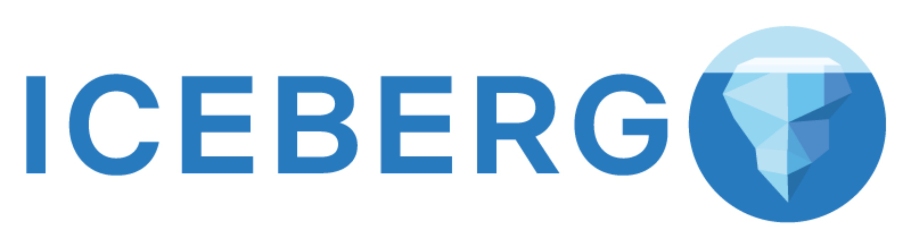
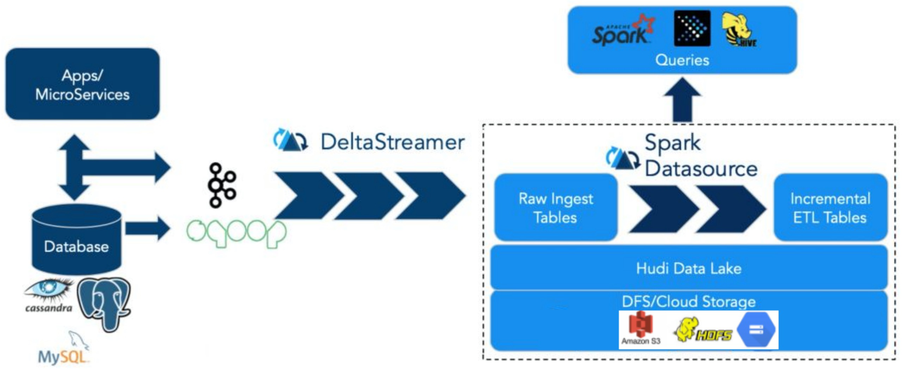
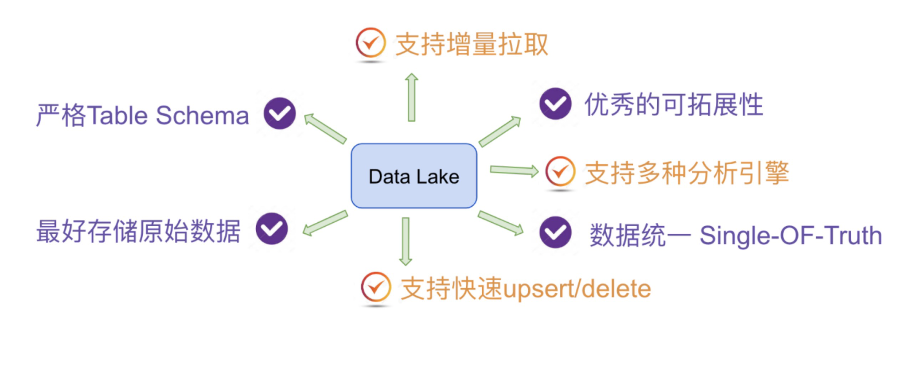
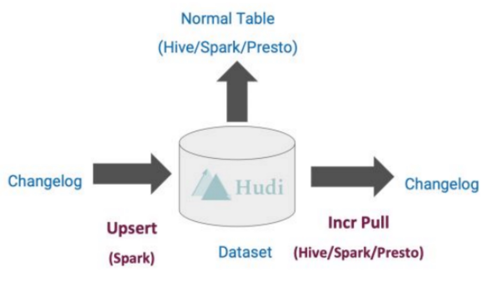
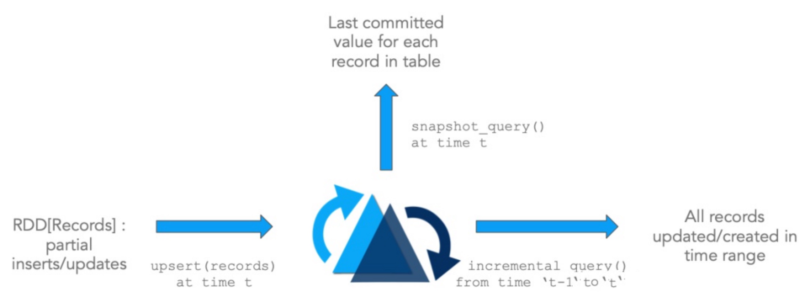
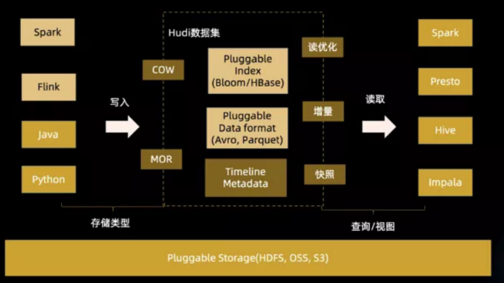

数据湖框架
目前市面上流行的三大开源数据湖方案分别为：Delta Lake、Apache Iceberg和Apache Hudi。
Delta Lake：DataBricks公司推出的一种数据湖方案，网址：https://delta.io/
Apache Iceberg：以类似于SQL的形式高性能的处理大型的开放式表，网址：https://iceberg.apache.org/

Apache Hudi：Hadoop Upserts anD Incrementals，管理大型分析数据集在HDFS上的存储，网址：https://hudi.apache.org/
这三种技术中，我们重点介绍Hudi技术。
Apache Hudi
- Apache Hudi：提供的fast upsert/delete以及compaction等功能，管理存储在HDFS上数据，设计目标正如其名，Hadoop Upserts Deletes and Incrementals（原为 Hadoop Upserts anD Incrementals）。

强调其主要支持Upserts、Deletes和Incrementa数据处理，支持三种数据写入方式：UPSERT，INSERT 和 BULK_INSERT。

Apache Hudi 基本介绍
概念
- Hudi（Hadoop Upserts anD Incrementals缩写）：用于管理分布式文件系统DFS上大型分析数据集存储。
- 一言以蔽之，Hudi是一种针对分析型业务的、扫描优化的数据存储抽象，它能够使DFS数据集在分钟级的时延内支持变更，也支持下游系统对这个数据集的增量处理。
功能
- Hudi是在大数据存储上的一个数据集，可以将Change Logs通过upsert的方式合并进Hudi；
- Hudi 对上可以暴露成一个普通Hive或Spark表，通过API或命令行可以获取到增量修改的信息，继续供下游消费；
- Hudi 保管修改历史，可以做时间旅行或回退；
- Hudi 内部有主键到文件级的索引，默认是记录到文件的布隆过滤器；

特性
Apache Hudi使得用户能在Hadoop兼容的存储之上存储大量数据，同时它还提供两种原语，不仅可以批处理，还可以在数据湖上进行流处理。
- Update/Delete记录：Hudi使用细粒度的文件/记录级别索引来支持Update/Delete记录，同时还提供写操作的事务保证。查询会处理最后一个提交的快照，并基于此输出结果。
- 变更流：Hudi对获取数据变更提供了一流的支持：可以从给定的时间点获取给定表中已updated/inserted/deleted的所有记录的增量流，并解锁新的查询姿势（类别）。

基础架构
- 通过DeltaStreammer、Flink、Spark等工具，将数据摄取到数据湖存储，可使用HDFS作为数据湖的数据存储；
- 基于HDFS可以构建Hudi的数据湖；
- Hudi提供统一的访问Spark数据源和Flink数据源；
- 外部通过不同引擎，如：Spark、Flink、Presto、Hive、Impala、Aliyun DLA、AWS Redshit访问接口；


...
...
00:00
00:00
This is copyright.